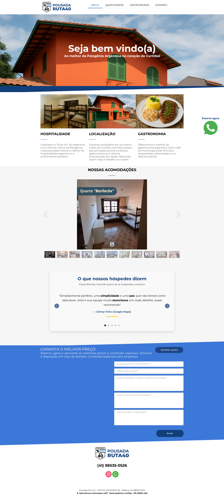
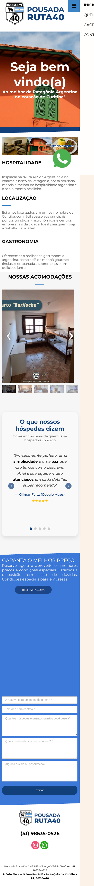

Proposta independente de melhoria digital
Pousada Ruta 40: reduza atrito na jornada de reserva direta
O site oficial já transmite a identidade da pousada, mas apresenta dois pontos verificáveis de atrito: um botão de WhatsApp com dígito faltante e uma galeria de acomodações sem informação de escolha. Esta proposta mostra o que foi encontrado, o que pode ser feito e o primeiro passo sugerido.
O que encontramos no site oficial


1. CTA de reserva quebrado
O botão principal “RESERVE AGORA” aponta para http://wa.me/4185350526, sem o dígito 9. O número correto publicado é (41) 98535-0526. No footer, o CTA inferior aponta para https://wa.me/41985350526, ainda inconsistente com o DDI.
2. Galeria sem informação de escolha
A seção “Nossas acomodações” exibe 11 imagens sem nome, capacidade, comodidades ou tarifa. O visitante não consegue comparar nem escolher o quarto ideal.
3. SEO e acessibilidade enfraquecidos
A página inicial não possui meta description nem H1 detectável. O formulário de reserva manual não captura datas de forma estruturada, dificultando a conversão em mobile.
Oportunidade e melhorias propostas
Corrigir o CTA quebrado e transformar a galeria em uma jornada mais clara pode reduzir atrito antes do contato, sem prometer resultados ou reservas.
WhatsApp unificado e correto
Substituir todos os CTAs por https://wa.me/5541985350526, com mensagem pré-preenchida contendo datas, hóspedes e quarto de interesse. Remove o atrito e o risco de número inválido.
Páginas por acomodação
Criar uma página ou destaque para cada opção somente depois de a pousada confirmar nomes, fotos, configuração, serviços e regras de atualização.
SEO, performance e prova social
Adicionar meta description, H1 semântico, texto alternativo nas imagens e velocidade de carregamento. Usar as avaliações reais (Google Maps, Airbnb) como prova social na home.
Entregáveis sugeridos
- Site institucional responsivo com homepage, páginas de acomodação e contato.
- Galeria de quartos com nome, capacidade, comodidades e CTA de reserva direta.
- Formulário de reserva com datas, hóspedes e integração via WhatsApp.
- Otimização on-page: meta description, H1, alt text e estrutura semântica.
- Testes de usabilidade em desktop (1440×900) e mobile (390×844).
Dependências
- Acesso às fotos oficiais e aprovação de nome/capacidade/comodidade por quarto.
- Definição de tarifas ou política de orçamento por WhatsApp.
- Número de WhatsApp comercial definitivo para integração.
Sequência sugerida
- Corrigir imediatamente todos os links de WhatsApp no site atual.
- Reestruturar “Nossas acomodações” com nome, fotos e CTA por quarto.
- Implementar meta description, H1, alt text e schema LocalBusiness.
- Publicar versão melhorada e medir taxa de conversão de reserva via WhatsApp.
Ver detalhes técnicos da auditoria (apêndice)
Site oficial: https://pousadaruta40.com.br/
- Certificado TLS: Let’s Encrypt, válido até 2026-08-30, mas a cadeia intermediária YR1 não é reconhecida por clientes Python padrão (erro
unable to get local issuer certificate). Recomenda-se verificar configuração de cadeia do servidor. - Título: “Pousada Ruta 40 - Hospedagem em Curitiba - INÍCIO”.
- Meta description: vazia.
- H1 semântico: não detectado na home; o título visual usa
<h2>. - CTA WhatsApp:
http://wa.me/4185350526(falta o 9) ehttps://wa.me/41985350526no footer (falta DDI +55). Número correto publicado: (41) 98535-0526. - O site oficial exibe comentários atribuídos a plataformas públicas; notas e quantidades devem ser verificadas diretamente nas plataformas antes de qualquer publicação.
openssl s_client -connect pousadaruta40.com.br:443 -servername pousadaruta40.com.br verify error:num=20:unable to get local issuer certificate